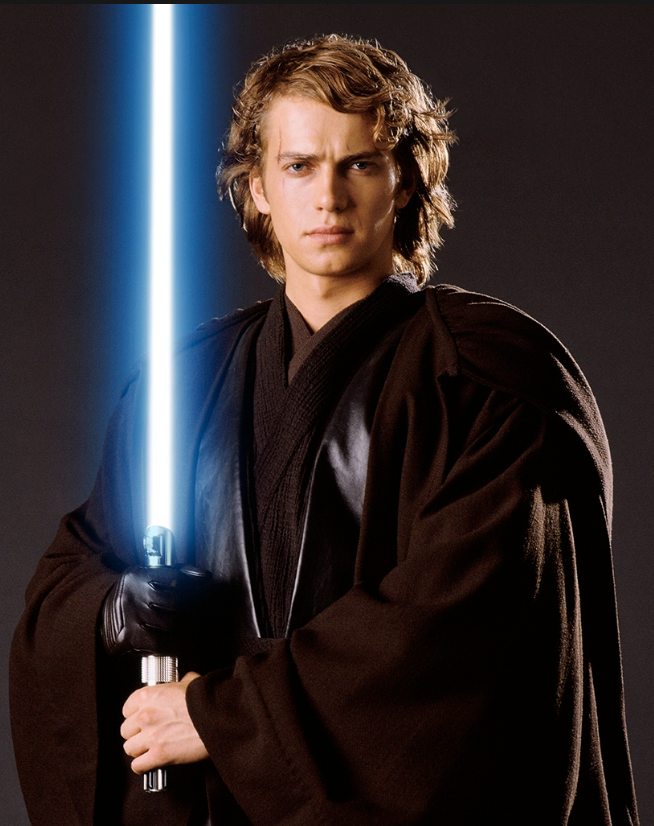

Personajes emblematicos
Caballeros Jedi
Anakin Skywalker
Anakin Skywalker, un hombre humano sensible a la Fuerza, fue un Caballero Jedi de la República Galáctica y el Elegido de la Fuerza. Durante las Guerras Clon, sus logros como comandante en el campo de batalla le valieron el apodo del Héroe Sin Miedo. Durante la siguiente década, Skywalker se convirtió en uno de los Jedi más fuertes en la historia galáctica. Si bien era a la vez cariñoso y compasivo, su miedo a la pérdida fue en última instancia el catalizador de su caída. A lo largo de la guerra, Skywalker entrenó a una padawan, Ahsoka Tano, quien finalmente abandonó la Orden Jedi después de que fuera acusada por el ataque terrorista en el Templo Jedi. La pérdida de Tano afectó a Skywalker a nivel personal, haciendo que se sintiera más aislado y amargado hacia el Alto Consejo Jedi.